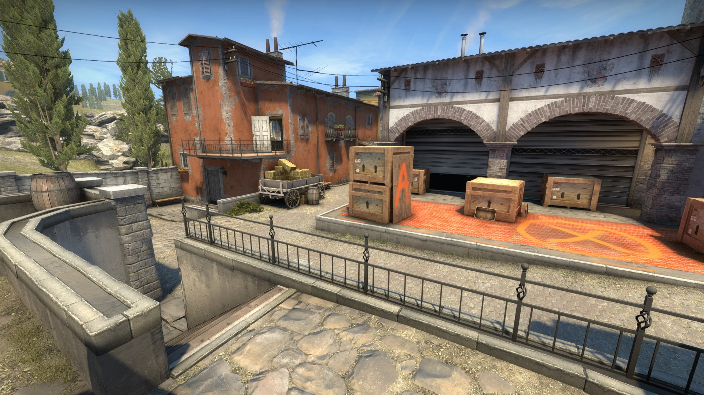

When updating the map, we aimed:
Improve visibility across the whole map
Easy moving in groups
Debug the game process by listening to the community.
Inferno is now on the reserve map list and we hope you'll play it and let us know what you think. Below we will briefly describe the map and highlight the main zones in which changes have taken place. Use the sliders to compare Inferno's old skin with the new one.. Plant А
Previously, this point seemed unattainable for terrorists: the defenders had a huge choice of advantageous positions, and it was not difficult to merge with the environment.


We primarily wanted to make possible defensive positions more obvious to attackers and give them more options to deploy smoke and blind grenades.
We have removed the hinged roof so that the laying point is better lit. This change also opens up vision between the library and the balcony, allowing you to use the sniper rifle from those positions and throw grenades directly at the point.
We replaced the notorious truck, which served as a kind of lift to the balcony, with a hay cart. It makes clear its purpose on the map and allows you to quickly climb onto the balcony.
On the high ground, we changed the fence and removed some decorative elements to make this defensive position more open. Now it is much easier to notice the player on it.

In addition to the laying point itself, the corridor leading to the balcony has also changed. We expanded it so that the attacking team can throw grenades before they are discovered. This should revive the defenders who have settled in the "sand".
Также мы решили избавиться от темной комнаты. Она была слишком удобной в плане защиты и вынуждала террористов тратить гранаты еще на подходе к точке закладки.
Вместо нее мы добавили небольшую нишу, как это было в Counter-Strike 1.6. На такой позиции гораздо проще справиться с врагом, но она всё еще может быть полезна для обороняющихся.
Точка закладки В
Эта точка, как и ведущие к ней пути, вызвали наибольшие дискуссии в рядах сообщества.


Проход к точке мы сделали более открытым, что позволяет нападающим передвигаться свободнее. Однако, как и в любом другом открытом пространстве, теперь здесь весьма эффективны гранаты, так что террористам нужно быть предельно осторожными.
Старую машину в конце улицы мы заменили на менее прочные деревянные укрытия, которые можно прострелить насквозь.
Защитники могут выглянуть из-за новой стены в конце улицы, подсадив своего игрока, но нападающие могут проверить позицию за ней обычным прыжком.
Мы расширили подход к точке закладки, а также добавили новые укрытия для нападающих террористов.
Изменениям подверглась и геометрия фоновых объектов: спецназ больше не сможет кидать гранаты на точку В из других частей карты.
Сама точка закладки тоже не осталась без внимания. Мы убрали щель между контейнерами и колонной, добавили возможность самостоятельно забраться на ящики возле входа на точку и постарались улучшить видимость на ней в целом.


Центр
Крупнейшее изменение центра карты — подземный ход, соединяющий две центральные улицы, стал выше. Для того чтобы попасть в него с основной центральной улицы, всё еще надо присесть, но примерно в середине у вас появится возможность встать.
Еще одно небольшое, но значимое изменение: мы удалили фонарный столб, годами собиравший миллионы пуль, и теперь у вас меньше оправданий для промаха.
БАЗА ТЕРРОРИСТОВ
Наконец-то появился дополнительный выход с базы террористов, ведущий на вторую центральную улицу.
В ЗАКЛЮЧЕНИЕ
Несмотря на изменения и улучшения карты, игровой процесс на ней практически не изменился. Выпустив бета-версию Inferno, мы получили ценные мнения игроков и на их основе исправили многие ошибки. Спасибо всем, кто принял участие. Мы продолжим наблюдать за отзывами, дорабатывая и улучшая карту.
Спешите посетить новую версию Inferno и поделиться с нами своим мнением! Надеемся, вам понравится!